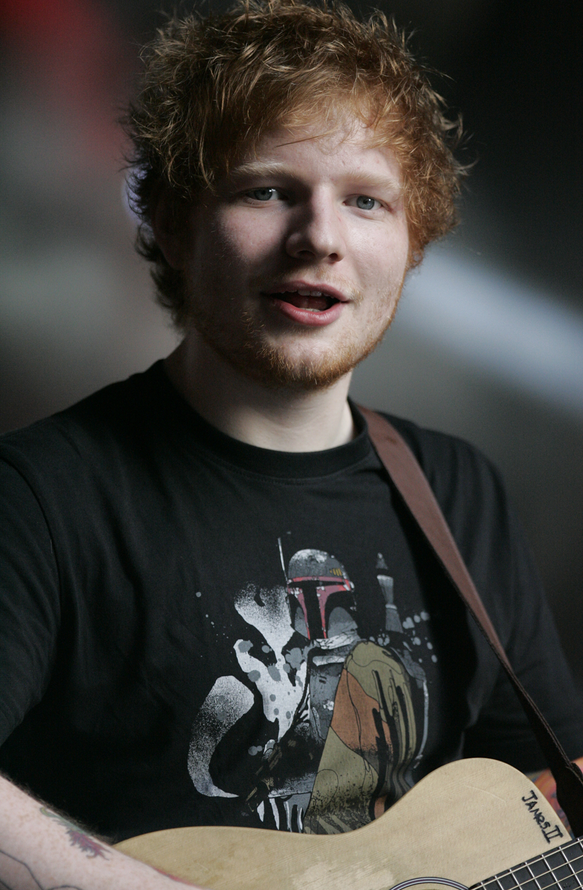

Сингл достиг четвёртого места в британском хит-параде UK Singles Chart в марте 2017 года[4]. 21 августа журнал Billboard анонсировал выход песни «Perfect» в качестве четвёртого сингла с альбома. На поп-радио песня вышла 26 сентября 2017.
4 декабря 2017 года, «Perfect» достиг третьего места в хит-параде Billboard Hot 100 и стал для Ширана третьим чарттооппером в цифровом чарте Digital Song Sales (69,000, минус 1 %). Ранее он возглавлял его в 2015 году с хитом «Thinking Out Loud» и 10 недель лидировал там в 2017 году с песней «Shape of You». «Perfect» достиг № 1 в Digital Song Sales, спустя несколько часов после релиза в версии дуэта. В целом версия с Бейонсе собрала 18 % суммарных продаж сингла. 11 декабря 2017, спустя неделю полного трекинга, сингл возглавил Billboard Hot 100, став для Ширана его вторым чарттоппером в США, а для Бейонсе её шестым сольником на № 1. «Perfect» оставался № 1 в Digital Songs с продажами 181,000 копий (рост 202 %). Версия в дуэте собрала 63 % общих продаж песни за неделю. «Perfect» также поднялся 11-3 в чарте Streaming Songs с 34,9 млн US streams (рост 87 %), в то время как в чарте Radio Songs, он поднялся 4-3 (102 млн аудитории, рост 14 %).
Оригинальная версия песни заняла первое место в чартах Австрии, Бельгии, Люксембурга, Малайзии, Нидерландов, Польши, Словакии, Словении, Филиппин, Франции, Шотландии, Швейцарии. После появления дуэта с Бейонсе, «Perfect» также достиг позиции № 1 в Австралии, Дании, Германии, Ирландии, Италии, Новой Зеландии, Швеции, Великобритании и США[9]. Он стал № 1 в Канаде, вторым в карьере певца в этой стране, а для Бейонсе первым.
«Perfect» стал седьмым лучшим по продажам синглом в США в 2017 году с тиражом 1,340,000 копий в том году. В 2018 году сингл стал бестселлером года с тиражом 1,300,000 копий.
1 страница7 страница